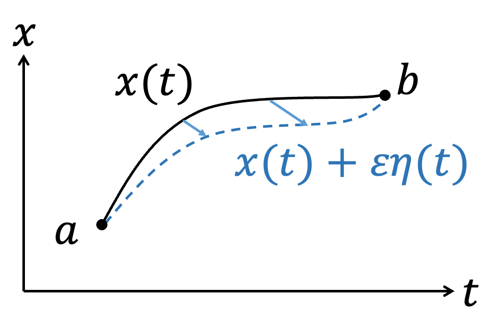
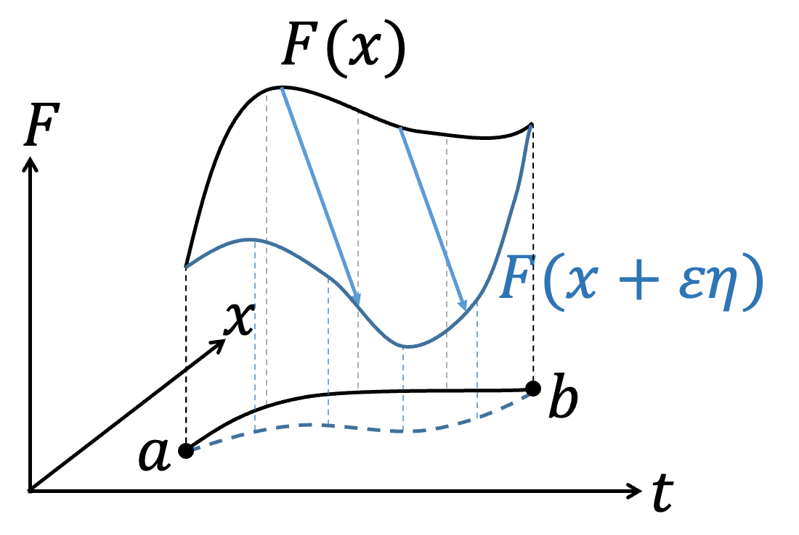

初階變分法
如果今天，一個泛函（Functional）的積分問題
$$S[F(x,\dot{x},t)]=\int_a^b F(x,\dot{x},t)dt$$
其中，\(x=x(t)\)、\( \dot{x}={dx \over dt}\)，固定\(a\)、\(b\)下改變軌跡\(x(t)\)的形式會對積分S造成影響，我們想找到S的極值（Extreme value，不論極大或極小）下，軌跡\(x(t)\)會是什麼形式？或是\(F(x,\dot{x},t)\)該滿足什麼條件？根據微積分的概念，在\(f(x)\)極值\(x_0\)附近做微小的變化\(x_0 + \varepsilon\)時，\(f(x)\)是不會有變化的，即\(df=0\)。類似的想法，\(S\)在極值附近時，\(x(t)\)稍微改變形式，\(\delta S=0\)。我們可以將積分問題簡單的用圖像表達，不同\(x(t)\)的函數形式表示不同的路徑連結\(a\)到\(b\)點。
 |  |
如果\(x(t)\)是滿足\(S\)的極值，那麼如果加入微小的任意函數\(\varepsilon \eta (t)\)，\( \eta (t)\)滿足\(\eta (a)=\eta (b)=0\)，使\(a\)、\(b\)兩點\(F(x,\dot{x},t)\)不變。在加入微小的任意函數\(\varepsilon \eta (t)\)後 $$x(t)→x(t)+\varepsilon \eta (t)$$ $$\dot{x}(t)→\dot{x}(t)+\varepsilon \dot{\eta} (t)$$ $$F(x,\dot{x},t)→F(x+\varepsilon \eta,\dot{x}+\varepsilon \dot{\eta} ,t)=F(x,\dot{x},t)+\delta F$$ 我們知道\(S\)在極值附近，微小變化\(\varepsilon\)時，\(S\)不變： $$\delta S=S[F(x+\varepsilon \eta ,\dot{x}+\varepsilon \dot{\eta},t)]-S[F(x,\dot{x},t)]=0\leftrightarrow {\delta S \over \delta \varepsilon} =0$$ \(\delta S\)的變化完全是由\(\delta F\)造成的，所以可以寫為 $${\delta S \over \delta \varepsilon} ={\delta \over \delta \varepsilon} \int_a^b Fdt=\int_a^b {\delta F\over\delta \varepsilon} dt =0$$ 利用微積分的手法，將\(\delta F\over \delta \varepsilon\) 展開 $${\delta S\over \delta \varepsilon} =\int_a^b {\delta F\over\delta \varepsilon} dt =\int_a^b {\partial F\over\partial x }{ \delta x\over\delta \varepsilon} +{\partial F\over\partial \dot{x} }{ \delta \dot{x} \over\delta \varepsilon }+{\partial F\over\partial t }{ \delta t\over\delta \varepsilon } dt $$ 但我們只針對做軌跡\(\eta \)變分，沒有對\(t\)變分，所以 $${\delta t\over\delta \varepsilon} =0$$ $${\delta S\over\delta \varepsilon} = \int_a^b {\partial F\over\partial x }{\delta x \over\delta \varepsilon} +{\partial F\over\partial \dot{x} }{\delta \dot{x} \over\delta \varepsilon } dt$$ 觀察\(\delta x\over\delta \varepsilon \)、\(\delta \dot{x} \over\delta \varepsilon \)： $${\delta x\over\delta \varepsilon} ={\delta \over\delta \varepsilon} (x+\varepsilon \eta )=\eta $$ $${\delta \dot{x}\over\delta \varepsilon} ={\delta\over\delta \varepsilon}(\dot{x} +\varepsilon \dot{\eta})=\dot{\eta}$$ 可以得到 $${\delta S\over\delta \varepsilon} =\int_a^b {\partial F \over \partial x} \eta +{\partial F\over \partial \dot{x}} \dot{\eta} dt$$ $$=\int_a^b {\partial F\over\partial x} \eta +{\partial F\over\partial \dot{x}} {d\eta \over dt} dt$$ $$=\int_a^b {\partial F\over\partial x} \eta dt+ \int_a^b {\partial F\over \partial \dot{x}} {d\eta\over dt} dt$$ 我們針對最後一項做分部積分 $$\int_a^b {\partial F\over\partial \dot{x} } {d\eta \over dt} dt={\color{red}{{ \partial F\over\partial \dot{x} }\eta\Big|_a^b}}-\int_a^b {d\over dt}{\partial F\over\partial \dot{x}}\eta dt$$ 注意紅色這一項，因為我們要求\(\eta (t)\)滿足\(\eta (a)=\eta (b)=0\)，所以\(\color{red}{{ \partial F\over\partial \dot{x} }\eta\Big|_a^b=0}\) $$∴{\delta S\over\delta \varepsilon} =\int_a^b {\partial F \over \partial x} \eta dt-\int_a^b{d\over dt}{\partial F\over\partial \dot{x}}\eta dt$$ $$=\int_a^b \left({\partial F \over \partial x}-{d\over dt}{\partial F\over\partial \dot{x}}\right)\eta dt=0$$ 因為\(\eta (t)\)是任意的，所以 $${\partial F \over \partial x}-{d\over dt}{\partial F\over\partial \dot{x}}=0$$ Euler-Lagrange equation
 王培儒
王培儒{kind=link}
{kind=link}